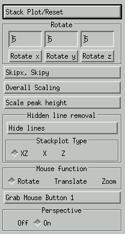
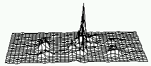
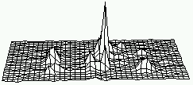
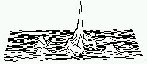
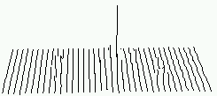
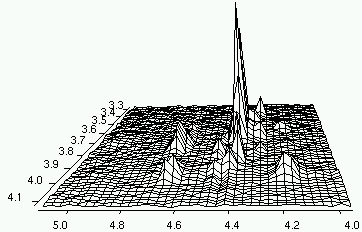

When in 2D mode, one can chose to display the spectrum not in contour mode
but in 3D mode instead. First select the required part of the spectrum in
contour mode. Than use Options->Stack Plot to get the following
popup menu.

In 3D mode, the x axis is from left to right, the y axis is from bottom
to top, and the z axis is from object to user.
Stack Plot/Reset
To initialize 3D plotting and transform a contour plot into a 3D plot, use
this option. View and scaling are set to default values. Use de contour plot
routines to leave the 3D plotting mode.
Rotate x
Rotate the image round the x axes with a user defined angle.
Rotate y
Rotate the image round the y axes with a user defined angle.
Rotate z
Rotate the image round the z axes with a user defined angle.
Skipx, Skipy
To make the manipulation of the image a bit faster, the image is drawn a
a lower resolution. Some lines in the x and y direction are skipped.
Overall Scaling
Set the overall size of the image.
Scale peak height
Scale the height of the peaks with this option.
Hide lines
Because this type of 3D plotting is slow, the spectrum is always first drawn
in wire mode. Use this option to remove the hidden lines.
Wireframe mode

There are 3 types of options that define which lines are drawn:
XZ - draw lines in x and z directions

X - draw only lines in x direction.

Z - draw only lines in z direction.

Mouse function
When selected will Rotate, Translate or Zoom the image
with the left mouse button.
Perspective
Use a perspective or orthographic projection.

Example of a 3D plot with perspective On.